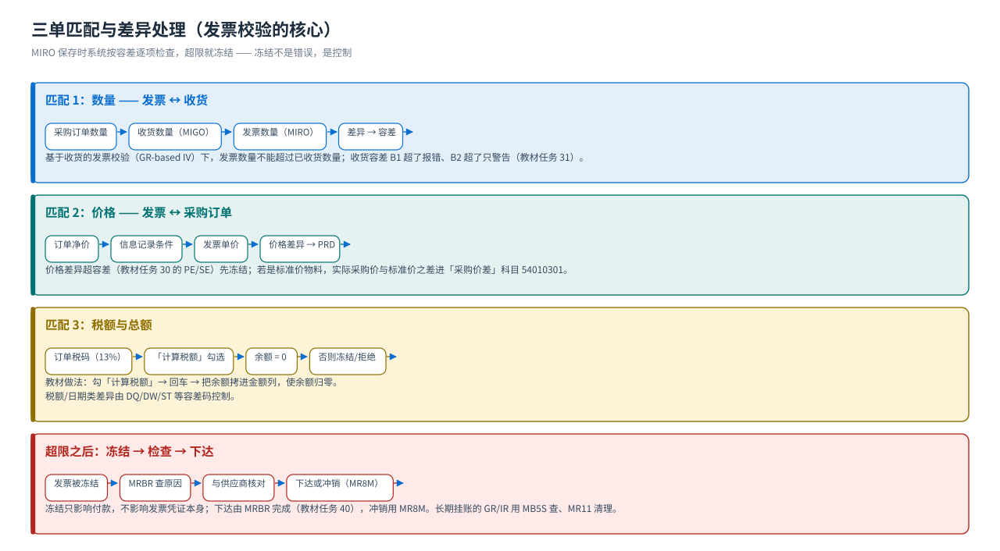
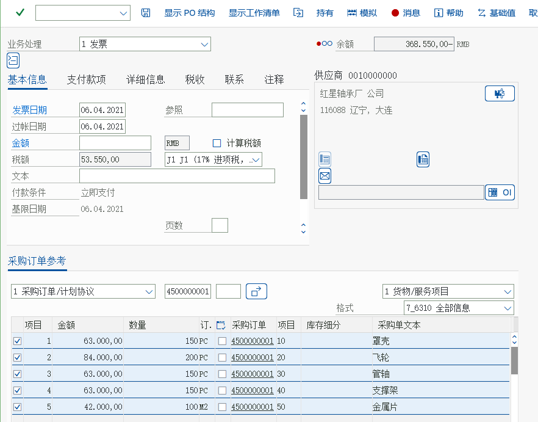
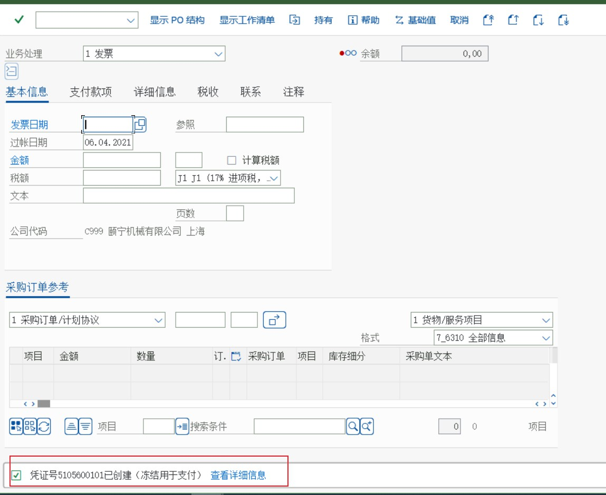
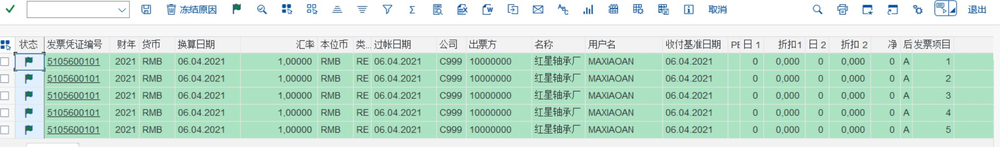
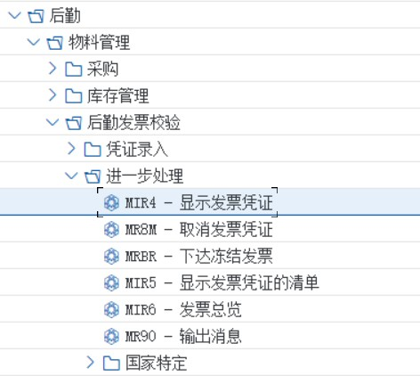
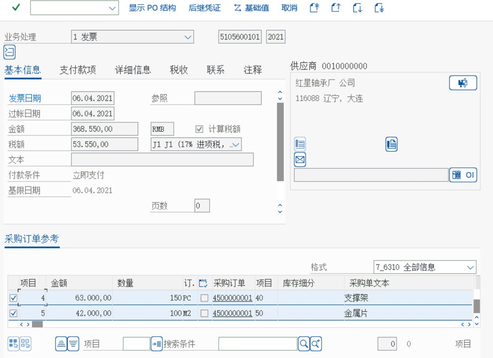
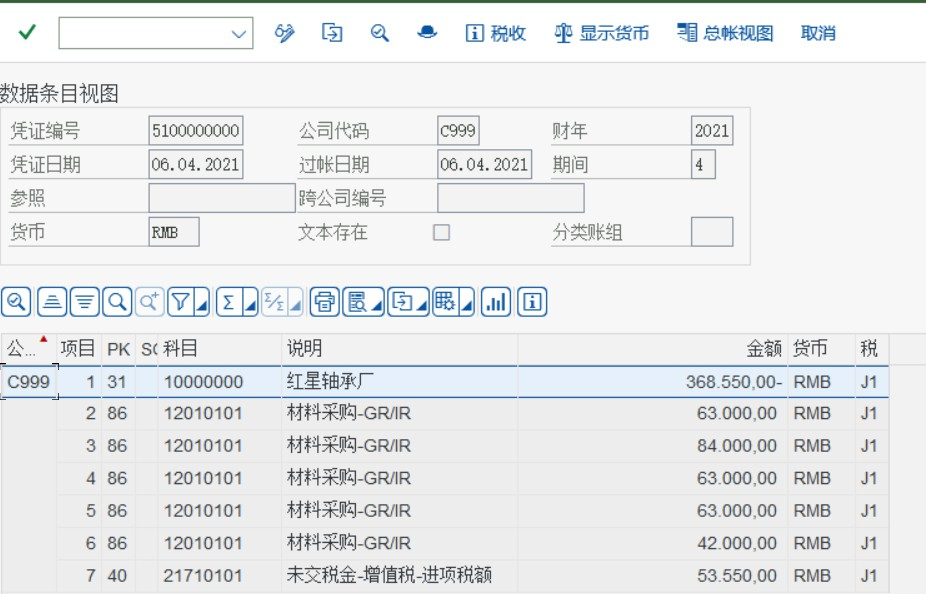

流程③ 发票校验
MIRO 三单匹配 · 容差与冻结 · MRBR 下达 · MIR4 凭证 · 与 FI 的衔接
发票校验（Logistics Invoice Verification, LIV）是 MM 的最后一环，也是「业务与财务的交汇点」：它拿供应商发票去和采购订单、收货做三单匹配，差一点就可能被冻结。教材 MM 任务 39–41 是这一篇的现场。
三单匹配（3-way match）
{kind=link}

| 匹配对象 | 比什么 | 不一致会怎样 |
|---|---|---|
| 发票 ↔ 采购订单 | 单价、价格单位、税码、付款条件 | 价格差异（容差码 PE/PS 等）；超容差 → 冻结 |
| 发票 ↔ 收货 | 数量（基于收货的发票校验） | 数量差异；超容差 → 冻结或拒绝 |
| 发票 ↔ 采购订单的税额 | 税码与税额 | 税额差异（容差码 DQ/DW 等） |
手顺① MIRO 输入发票
任务 39
输入采购发票
MIRO教学要点教材现场：先勾「计算税额」，再回车把「余额」处的金额拷到金额列，使其与订单/收货匹配（余额为 0 才算匹配上）；超容差时发票自动被冻结。
IMG 路径（教材后台菜单）后勤 → 物料管理 → 后勤发票校验 → 凭证输入 → MIRO 输入发票
解释：供应商的采购发票随后送到前台
后勤－物料管理－后勤发票校验－凭证输入－MIRO 输入发票
画面 1教材《S4.docx》· MM 任务 39 输入采购发票 · 原图 01_1_image762.png 
画面 2教材《S4.docx》· MM 任务 20 将评估范围集合分组 · 原图 02_1_image161.png 原书提示在PO参考里面，按照下图输入采购订单，然后点击回车。
画面 3教材《S4.docx》· MM 任务 39 输入采购发票 · 原图 02_1_image763.png 先选中计算税额，按回车键，将余额处的金额拷贝在金额处，点击回车

画面 4教材《S4.docx》· MM 任务 39 输入采购发票 · 原图 03_1_image764.png 
画面 5教材《S4.docx》· MM 任务 39 输入采购发票 · 原图 04_1_image765.jpeg 原书提示点击保存，如果出现超过容差的情况，发票会冻结
{kind=link}
{kind=link}
| 字段 | 含义 | 教材/标准做法 |
|---|---|---|
| 业务处理 | 发票 / 贷项凭证 / 后续借项 | 发票 |
| 采购订单参考 | 以哪个订单为基准 | 输入采购订单号后回车带出行 |
| 参考（发票号/日期） | 供应商发票号与日期 | 供应商发票上的号码（用于重复性检查） |
| 金额 | 发票金额（含税） | 0 差异即匹配；有余额说明数量/价格不一致 |
| 计算税额 | 是否由系统算税 | 勾上（教材画面） |
| 收货行 / 选择 | 是否按收货行匹配 | GR-based IV 的订单必须先收货 |
手顺② MRBR 下达冻结发票
任务 40
下达冻结发票
MRBR教学要点被冻结的发票要由管理人员检查后手工下达：MRBR 里选中前面「小绿旗」释放；下达后才允许进入付款流程。
IMG 路径（教材后台菜单）后勤 → 物料管理 → 后勤发票校验 → 进一步处理 → MRBR 下达冻结发票
后勤－物料管理－后勤发票校验－进一步处理－MRBR 下达冻结发票

画面 6教材《S4.docx》· MM 任务 40 下达冻结发票 · 原图 01_1_image766.png 
画面 7教材《S4.docx》· MM 任务 40 下达冻结发票 · 原图 02_1_image767.jpeg 
画面 8教材《S4.docx》· MM 任务 40 下达冻结发票 · 原图 03_1_image768.jpeg 
画面 9教材《S4.docx》· MM 任务 40 下达冻结发票 · 原图 04_1_image769.jpeg 原书提示选中后点击小绿旗，然后保存原书提示这样发票就被下达了。
{kind=link}
冻结不是错误，是控制教材任务 32 配置了 14 个容差码（AN、AP、BD、BR、BW、DQ、DW、KW、PP、PS、ST、VP 等），每个码对应一类检查（价格、数量、税额、小差异、日期…）。被冻结说明触发了其中一条 —— 教学上要让学生说出「触发了哪一条、为什么」，而不是只会点下达。
手顺③ MIR4 显示发票与会计凭证
任务 41
显示发票和会计凭证
教学要点MIR4 显示发票凭证本体；点「后续凭证」看它生成的会计凭证概览，这是「MM 动作 → FI 凭证」最直观的证据。
IMG 路径（教材后台菜单）后勤 → 物料管理 → 后勤发票校验 → 进一步处理 → MIR4 显示发票凭证
解释：发票校验也会自动生成会计凭证，本步骤进一步展示前面输入的发票及产生的凭证前台
后勤－物料管理－后勤发票校验－进一步处理－MIR4 显示发票凭证
画面 10教材《S4.docx》· MM 任务 41 显示发票和会计凭证 · 原图 01_1_image770.jpeg 
画面 11教材《S4.docx》· MM 任务 41 显示发票和会计凭证 · 原图 02_1_image771.png 选择显示凭证

画面 12教材《S4.docx》· MM 任务 41 显示发票和会计凭证 · 原图 03_1_image772.jpeg 原书提示点击后续凭证，出现会计凭证概览
画面 13教材《S4.docx》· MM 任务 41 显示发票和会计凭证 · 原图 04_1_image773.jpeg
{kind=link}
{kind=link}
{kind=link}
| 想看的 | T-code | 说明 |
|---|---|---|
| 发票凭证（单张） | MIR4 | 显示模式；MIR6 可改 |
| 发票折让/冲销 | MR8M | 取消发票（会产生反向凭证） |
| 付款申请/催款建议 | MRBR 下达后进 FI，F110 自动付款提议 | 见 FI 站的应付流程 |
| GR/IR 未清项 | MB5S / MR11 | 看收货与发票是否配平；MR11 清理小额差异 |
差异与容差（教学重点）
| 差异类型 | 典型容差码 | 教材配置任务 | 后果 |
|---|---|---|---|
| 采购订单 ↔ 发票金额（价格差异） | PE、PS | 任务 30（复制模板公司 0001 的 PE/SE） | 超限 → 冻结，需审批下达 |
| 收货数量 ↔ 定价数量（收货容差） | B1、B2 | 任务 31（B1 报错 / B2 警告） | B1 直接拒绝，B2 只警告 |
| 发票各类差异 | AN、AP、BD、BR、BW、DQ、DW、KW、PP、PS、ST、VP 等 14 个 | 任务 32（从 0110 公司复制） | 按容差码性质报错或冻结 |
| 项目金额检查 | （项目金额检查开关） | 任务 33（把公司加进检查清单） | 超项目金额上限的行被检查/冻结 |
| 采购价格差异（记入科目） | PRD → 54010301 主营业务成本-采购价差 | 任务 28（OBYC） | 标准价物料的价格差异进差异科目 |
容差的读法容差有上/下限，且绝对额与百分比只要一个超出就算超容差 —— 这是教材任务 30 的原话。所以「差 200 元但只差 0.1%」也可能被拦。
与 FI 的衔接
| MM 动作 | FI 凭证 | 科目（教材值） |
|---|---|---|
| 收货 101 | 借：存货 / 贷：GR/IR | 12430101 / 12010101 |
| 发票校验 | 借：GR/IR / 贷：应付账款（+ 进项税） | 12010101 / 应付 / 增值税 |
| 付款（F-53/F110） | 借：应付账款 / 贷：银行存款 | 应付 / 银行 |
| 采购价差 | 借/贷：采购价差科目 | 54010301（PRD） |
- 发票校验产生的凭证在 FI 里就是普通的会计凭证（
FB03可查，类型通常是 KR/RE）。 - GR/IR 是「暂估」科目：只要收货与发票数量金额不一致，它就有余额 —— 月末要跑
MR11或对账（MB5S）看它是否配平。 - 付款在 FI（教材 FI 的 FB60/F-53 部分），也可以在 MM 侧发起（
MRBR下达后进 F110）。
常见错误与排查
| 症状 | 原因 | 处理 |
|---|---|---|
| MIRO 报「找不到要校验的采购订单」 | 订单未收货 / 已交货完成 / 工厂不符 | 先收货；或检查订单 WEPOS 与 ELIKZ 状态 |
| 发票保存后自动冻结 | 触发容差码 | MRBR 看冻结原因 → 与供应商核对 → 下达或改发票 |
| 重复发票无法输入 | 参考字段（供应商发票号+日期）重复检查 | 核对是否真重复；确需输入要调整参考号 |
| GR/IR 挂账不平 | 收货与发票数量/金额不一致（或漏开票） | MB5S/MR11 分析；能补开票就补，小额差异可 MR11 清理 |